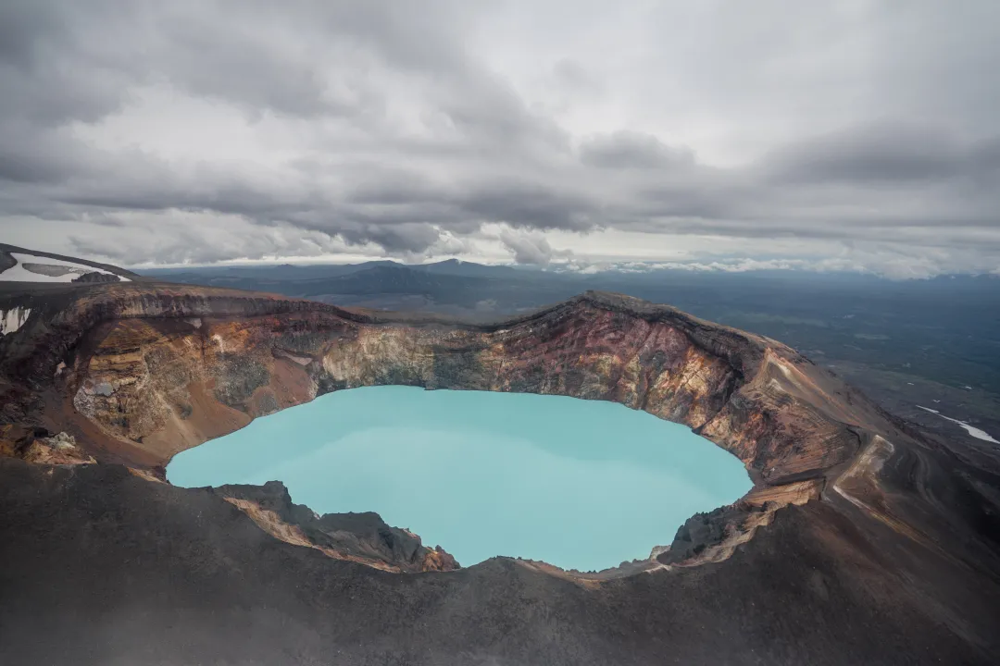
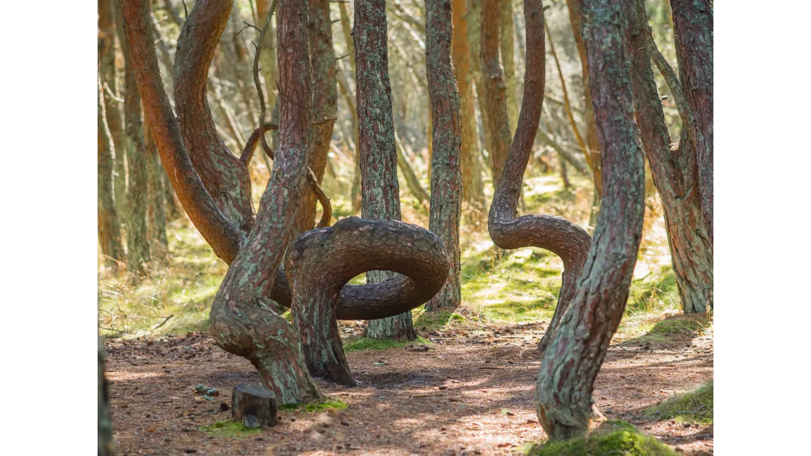

Кунгурская ледяная пещера
Огромная пещера, изнутри покрытая льдом, находится в Пермском крае.Её протяжённость около 5700 м, в ней 48 больших гротов и 60 прозрачных подземных озёр. Ледяные наросты образуют причудливые формы. Например, один из гротов называется Бриллиантовым — из-за сверкающих игольчатых кристаллов.
Малый Семячик
Это стратовулкан на Камчатке. В одном из его кратеров — Троицком — находится невероятной красоты озеро зелёно-голубого цвета. Плавать по такому ни в коем случае нельзя: в горячей воде содержатся очень едкие кислоты, серная, соляная и плавиковая, которые могут быть опасны для человека. А такой цвет воде придают частички серы.
Каменные грибы Урочища Аккурум
На склоне горы в Алтайском заповеднике как будто действительно выросли огромные (до 7 м в высоту!) грибы из камня: на высоких столбах лежат круглые «шляпки». Откуда они взялись? Просто менее твёрдая горная порода, образующая «ножки», легче разрушается ветрами и дождями, а лежащие сверху более прочные скальные обломки породы — «шляпки» — остаются.
Байкал
Озеро в Восточной Сибири, которое содержит почти 5 часть всей пресной воды на планете. Обычно мы представляем озеро круглым или овальным, а Байкал — вытянутый по форме, как полумесяц. Длина его 620 км, а ширина доходит до 80 км. Оно очень глубокое (местами около 1,5 км) и очень чистое: если посмотреть вниз, то видно далеко-далеко. Здесь живёт очень много животных, около 3 тысяч видов. Есть даже нерпа — крупное млекопитающее, обитатель морей.
Ленские столбы
Высокие скалы стоят строем вдоль берега Лены в Якутии. Они как будто «охраняют» реку на протяжении нескольких десятков километров. Когда-то, миллионы лет назад, здесь было море, на дне которого находились огромные отложения известняка. После сложных геологических процессов они оказались на поверхности, поднялись, и ещё тысячи лет над ними «работали» дожди, солнце и ветер. Здесь можно увидеть наскальные рисунки древних людей, учёные находят находят окаменелости вымерших животных.
Озеро Эльтон
Самое крупное в Европе солёное озеро находится в Волгоградской области. Цвет у воды красноватый из-за водорослей, которые живут здесь. Для купания и плавания озеро не подходит: хоть оно и большое, но очень мелкое, летом глубина всего около 30 см, а где-то и меньше. Да и вода здесь горькая и маслянистая.
Куршская коса
Длинная песчаная полоса тянется на 98 км (по территории России и Литвы), отделяя Куршский залив от Балтийского моря. Где-то коса совсем узкая всего в 400 м шириной, где-то доходит до 4 км. Любоваться здесь можно не только на песчаные дюны. Например, на косе есть удивительный «Танцующий лес» — стволы у деревьев в нём как будто извиваются и закручиваются: откуда такой эффект, непонятно. Возможно, дело в перепаде температур и составе почвы, влияющих на рост деревьев.
